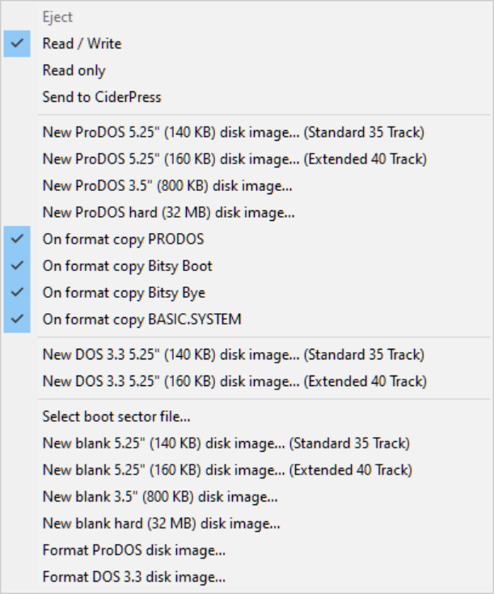
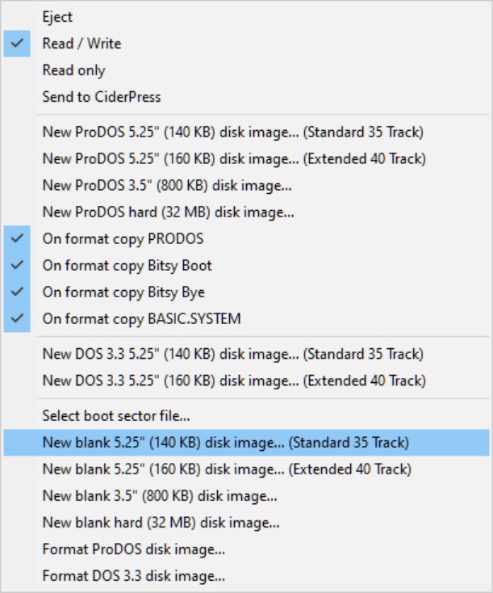
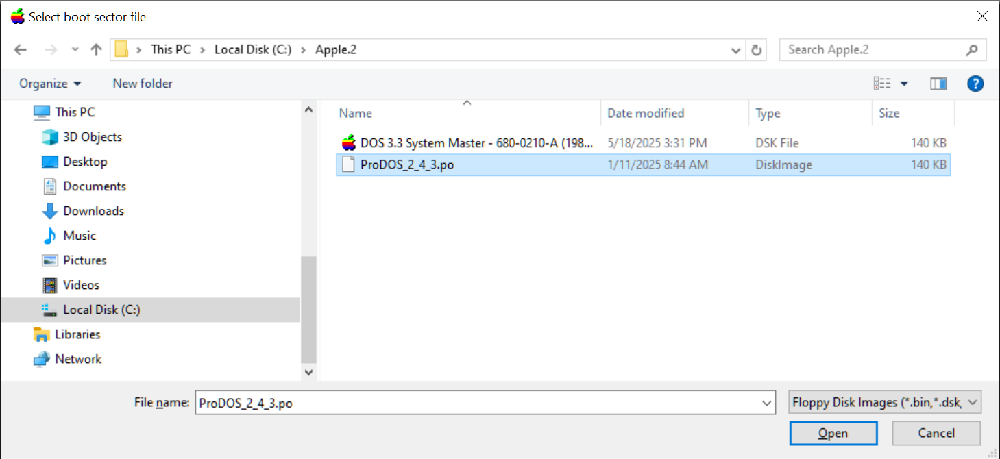

Note: This disk will be bootable but it won't have a File System or Disk Operating System (DOS 3.3, ProDOS, etc.) on it.
Bootable Disks, Data Disks, File Systems, and Disk Operating Systems
When you use AppleWin's New disk image... to create a new blank disk it will be bootable since it place a 256 byte AppleWin-provided boot sector; this bootable disk is called a data disk.
However, all new disks will NOT have a File System or Disk Operating System (DOS 3.3, ProDOS, etc.) on it.
A File System lets you name and store files on the disk. A standard Disk Operating System lets you choose which applications or files to run, load, or save.To make a disk usable under AppleWin you will need to format it -- either with AppleWin or some other utility (see their respective manual) -- which puts a File System on it, and optionally a DOS on it.
To put a File System on an data disk:
- Make sure your disk it not mounted in the disk drive. If it is, right-click on the drive button and select Eject.

- Right-click on the drive button and select either:
Format DOS 3.3 disk image
or
Format ProDOS disk image...
- You will see a warning depending on which OS you picked:

- You can then mount this disk and save/copy files to it.
HOWTO: Put an Operating System on new disk:
When you make a New disk image AppleWin puts a boot sector on it. You can customize the boot sector -- this can actually be any binary file, even an a bootable disk image!
Normally to put an Disk Operating System on it you would either need to a disk utility such as Copy ][+, CiderPress -- but we can take advantage of the custom boot sector and AppleWin's Select boot sector file... option to simultaneously place both a File System and Operating System on it.
To put DOS 3.3 on a blank disk:
- Make sure your disk it not mounted in the disk drive. If it is, right-click on the drive button and select Eject.
- Right-click on the drive button and select Select boot sector file...
- AppleWin will show the currect boot sector. By default it will use one built into AppleWin.

- Select Yes then select a bootable DOS 3.3 disk such as MASTER.DSK

- Right-click on the drive button and select New 5.25" disk image...
NOTE: For DOS 3.3 you MUST select a 5.25" disk since Apple DOS 3.3 does NOT suppport 3.5" or hard drives.
- Type in a name for your disk. It MUST end in .DSK or .DO.
- You can now mount and boot your new disk image.

To put ProDOS on a blank disk:
- Make sure your disk it not mounted in the disk drive. If it is, right-click on the drive button and select Eject.
- Right-click on the drive button and select Select boot sector file...
- AppleWin will show the currect boot sector. By default it will use one built into AppleWin.
- Select a bootable ProDOS disk such as ProDOS_2_4_3.po
 - Right-click on the drive button and select New disk image....
NOTE: For ProDOS you can select any of the disk sizes since they are all supported by ProDOS.
- Type in a name for your disk. It MUST end in .PO or .HDV.
- You can now mount and boot your new disk image.
More Disk Tools
There are various third-party utilities to create and modify disk images. Three popular ones are:- CiderPress 2 (newer)
- CiderPress (older)
- Copy ][+. NOTE: Version 5.0 introduced ProDOS support but if you are modifying ProDOS disks you will want to use one of the latter versions (such as 8.x or later) since earlier verions have various ProDOS bugs in them dealing with the amount of files in a directory.